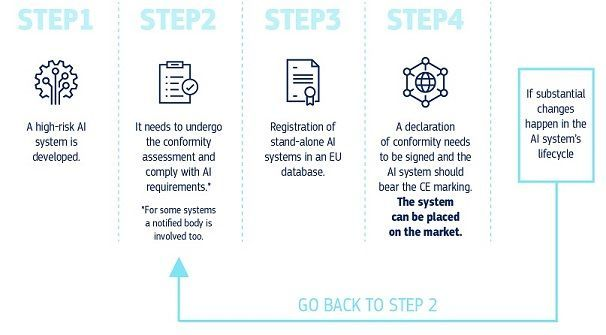

← Strona dzielnicy · Pokaz slajdów
Slajdy do czytania · dzielnica 07
Prawne wyzwania AI (I): ramy regulacyjne i prawo autorskie
Treść slajdów w układzie wygodnym na telefonie. Szersze omówienie jest w konspekcie i w Wiedzy na stronie dzielnicy.
Plan spotkania
- AI Act: definicje, podejście oparte na ryzyku, praktyki zakazane, wysokie ryzyko, przejrzystość (art. 50), modele GPAI
- Harmonogram stosowania AI Act po omnibusie cyfrowym (rozporządzenie 2026/1744)
- Ustawa z 3 lipca 2026 r. o systemach sztucznej inteligencji: KRiBSI, kontrole, sankcje, piaskownice
- Konwencja ramowa Rady Europy. DSA i DMA jako otoczenie regulacyjne
- Prawo autorskie: wytwór AI a utwór, eksploracja tekstów i danych (TDM), spory sądowe
Mapa źródeł prawa AI w Polsce
| Poziom | Akty |
|---|---|
| Rada Europy | Konwencja ramowa o AI (CETS 225) |
| UE | AI Act, RODO, DSA, DMA, dyr. 2019/790 |
| Polska | ustawa z 3.07.2026, pr. aut., k.c. |
Regulacje na świecie: aktualizacja 2024 → 2026
- ONZ: rezolucja A/RES/78/265 (21.03.2024, z inicjatywy USA, ponad 120 współautorów, w tym Polska); rezolucja A/RES/79/325 (26.08.2025): niezależny międzynarodowy panel naukowy ds. AI i Globalny Dialog o zarządzaniu AI.
- Rada Europy: pierwsza wiążąca umowa międzynarodowa o AI (2024).
- Korea Płd. i Japonia: ustawy ramowe o AI (2025–2026); USA: deregulacja federalna i prawo stanowe; Chiny: przepisy sektorowe.
- Brazylia: projekt PL 2338/2023 przyjęty przez Senat 10.12.2024, w Izbie Deputowanych wciąż czeka na sprawozdanie. Wielka Brytania: nadal bez ustawy o AI, podejście sektorowe.
- Porównanie modeli regulacji: spotkanie 6.
Część I. AI Act: architektura
AI Act w pigułce
- Rozporządzenie (UE) 2024/1689 z 13.06.2024 r., w mocy od 1.08.2024 r.
- 113 artykułów, 13 załączników, 180 motywów.
- Podstawa: rynek wewnętrzny (art. 114 TFUE) i ochrona danych (art. 16 TFUE).
- Logika prawa bezpieczeństwa produktów: ocena zgodności, oznakowanie CE, nadzór rynku.
- Cel (art. 1): rynek godnej zaufania AI i ochrona zdrowia, bezpieczeństwa oraz praw podstawowych.
Definicja systemu AI (art. 3 pkt 1)
„system AI” oznacza system maszynowy, który został zaprojektowany do działania z różnym poziomem autonomii po jego wdrożeniu oraz który może wykazywać zdolność adaptacji po jego wdrożeniu, a także który – na potrzeby wyraźnych lub dorozumianych celów – wnioskuje, jak generować na podstawie otrzymanych danych wejściowych wyniki, takie jak predykcje, treści, zalecenia lub decyzje, które mogą wpływać na środowisko fizyczne lub wirtualne
- Kluczowe znamię: wnioskowanie (inference). Zwykły program wykonujący reguły napisane przez człowieka to nie system AI.
Kto ma obowiązki?
- Dostawca (art. 3 pkt 3): rozwija system lub model i wprowadza go do obrotu pod własną nazwą.
- Podmiot stosujący (art. 3 pkt 4): używa systemu w ramach swojej działalności, np. kancelaria, sąd, bank, urząd.
- Importer, dystrybutor, upoważniony przedstawiciel.
- Zasięg eksterytorialny (art. 2): także dostawcy spoza UE, jeśli wyniki systemu są wykorzystywane w Unii.
- Wyłączenia: cele wojskowe i bezpieczeństwa narodowego, badania naukowe, użytek osobisty pozazawodowy.
Podejście oparte na ryzyku

Praktyki zakazane (art. 5)
- a manipulacja
- b wykorzystywanie słabości
- c ocena społeczna
- d predykcja przestępstw z profilowania
- e scraping wizerunków twarzy
- f emocje w pracy i szkole
- g kategoryzacja biometryczna
- h identyfikacja biometryczna na żywo
Od 2.02.2025. Kara: do 35 mln euro lub 7% obrotu.
Nowe zakazy po omnibusie
- Omnibus cyfrowy (rozp. 2026/1744) dodał do art. 5 m.in. zakaz systemów generujących materiały intymne bez zgody osoby przedstawionej oraz materiały przedstawiające seksualne wykorzystywanie dzieci (CSAM).
- Stosuje się od 2.12.2026.
- Nowe lit. ba i bb w art. 5 ust. 1; ust. 1a i 1b rozdzielają odpowiedzialność dostawcy i podmiotu stosującego.
- Tło: masowe „rozbieranie” zdjęć przez generatory obrazu (2025–2026).
Wysokie ryzyko: dwie ścieżki (art. 6)
Art. 6 ust. 1 + zał. I
- AI jako element bezpieczeństwa produktu objętego unijnym prawem harmonizacyjnym
- np. wyroby medyczne, maszyny, zabawki, windy, samochody
- ocena zgodności przez jednostkę notyfikowaną
- stosowanie: 2.08.2028
Art. 6 ust. 2 + zał. III
- osiem obszarów zastosowań
- biometria; infrastruktura krytyczna; edukacja; zatrudnienie; usługi publiczne i prywatne (np. ocena zdolności kredytowej); ściganie przestępstw; migracja i granice; wymiar sprawiedliwości i procesy demokratyczne
- stosowanie: 2.12.2027
Wyjątek z art. 6 ust. 3
- System z zał. III nie jest wysokiego ryzyka, jeśli nie stwarza znaczącego ryzyka szkody, bo np.:
- wykonuje wąskie zadanie proceduralne,
- poprawia wynik wcześniej zakończonej czynności człowieka,
- wykrywa wzorce lub odstępstwa, nie zastępując oceny człowieka,
- wykonuje zadanie przygotowawcze.
- Profilowanie osób fizycznych zawsze oznacza wysokie ryzyko.
- Dostawca musi udokumentować ocenę. Taki system nadal trzeba zarejestrować w bazie UE (art. 49 ust. 2); omnibus ograniczył zakres wymaganych informacji.
Wymogi i obowiązki dostawcy
- Wymogi (art. 8–15): zarządzanie ryzykiem, jakość danych i zarządzanie danymi, dokumentacja techniczna, rejestrowanie zdarzeń, przejrzystość i instrukcja, nadzór człowieka, dokładność, solidność, cyberbezpieczeństwo.
- Obowiązki dostawcy (art. 16): system zarządzania jakością, ocena zgodności, deklaracja zgodności, oznakowanie CE, rejestracja w bazie UE, monitorowanie po wprowadzeniu do obrotu.

Źródło: Komisja Europejska, digital-strategy.ec.europa.eu.
Obowiązki podmiotu stosującego
- Art. 26: używać zgodnie z instrukcją, zapewnić nadzór człowieka przez osoby o odpowiednich kompetencjach, monitorować działanie, przechowywać logi, informować pracowników i osoby, wobec których system podejmuje decyzje.
- Art. 27: ocena skutków dla praw podstawowych (FRIA) przed użyciem systemu: podmioty publiczne i prywatne świadczące usługi publiczne, a także ocena zdolności kredytowej i ubezpieczenia.
- Art. 86: prawo do wyjaśnienia decyzji podjętej z wykorzystaniem systemu wysokiego ryzyka.
Przejrzystość: art. 50
| Ust. | Kto | Obowiązek |
|---|---|---|
| 1 | dostawca | „rozmawiasz z AI” |
| 2 | dostawca | oznaczanie treści syntetycznych |
| 3 | stosujący | informacja o rozpoznawaniu emocji |
| 4 | stosujący | ujawnianie deepfake’ów |
Od 2.08.2026; ust. 2 dla starszych systemów: od 2.12.2026.
Modele AI ogólnego przeznaczenia (GPAI)
- Model GPAI: trenowany na dużej ilości danych, wykazuje znaczną ogólność, może wykonywać szeroki zakres zadań (art. 3 pkt 63).
- Obowiązki wszystkich dostawców (art. 53): dokumentacja techniczna, informacje dla dostawców „w dół łańcucha”, polityka zgodności z prawem autorskim, publiczne streszczenie danych treningowych.
- Model z ryzykiem systemowym (art. 51): domniemanie przy obliczeniach treningowych powyżej 10²⁵ FLOP; dodatkowo ewaluacja, testy kontradyktoryjne, zgłaszanie poważnych incydentów, cyberbezpieczeństwo (art. 55).
- Kodeks praktyk GPAI (10.07.2025): przejrzystość, prawo autorskie, bezpieczeństwo.
- Obowiązki od 2.08.2025; kary Komisji (art. 101) od 2.08.2026.
Kary (art. 99 i 101)
| Naruszenie | Maksymalna kara |
|---|---|
| praktyki zakazane (art. 5) | 35 mln euro lub 7% światowego rocznego obrotu |
| inne obowiązki (m.in. wysokie ryzyko, art. 50) | 15 mln euro lub 3% obrotu |
| nieprawdziwe informacje dla organów | 7,5 mln euro lub 1% obrotu |
| dostawcy modeli GPAI (Komisja, art. 101) | 15 mln euro lub 3% obrotu |
- Decyduje kwota wyższa; dla MŚP i małych spółek o średniej kapitalizacji: niższa (art. 99 ust. 6 i 6a).
- O karach dla organów publicznych decyduje państwo członkowskie (art. 99 ust. 8).
Ile mogą wynosić kary za naruszenie AI Act?

Kto pilnuje AI Act?
- Urząd ds. AI (AI Office) w Komisji Europejskiej: nadzór nad modelami GPAI.
- Europejska Rada ds. AI: przedstawiciele państw, koordynacja.
- Panel naukowy niezależnych ekspertów, forum doradcze.
- Organy krajowe: organ nadzoru rynku i organ notyfikujący. W Polsce: KRiBSI.
- Po omnibusie (art. 75 ust. 1): Urząd ds. AI nadzoruje też systemy zbudowane na modelu GPAI tego samego dostawcy oraz systemy w bardzo dużych platformach i wyszukiwarkach w rozumieniu DSA.
Część II. Harmonogram po omnibusie
Harmonogram stosowania AI Act

Co zmienił omnibus cyfrowy (rozp. 2026/1744)?
- Przesunięcie terminów dla wysokiego ryzyka: zał. III → 2.12.2027, zał. I → 2.08.2028.
- Art. 4: zamiast obowiązku zapewnienia kompetencji w zakresie AI, obowiązek ich wspierania.
- Nowe zakazy w art. 5 (od 2.12.2026).
- Nowy art. 4a: przetwarzanie szczególnych kategorii danych w celu wykrywania stronniczości (art. 10 ust. 5 uchylono).
- Ułatwienia dla MŚP i małych spółek o średniej kapitalizacji: uproszczona dokumentacja, niższe kary; piaskownica na poziomie UE.
- Ocena skutków dla praw podstawowych (FRIA) może odsyłać do oceny skutków dla ochrony danych (DPIA).
- Bez zmian: art. 5 w dotychczasowym zakresie, art. 50, obowiązki GPAI.
Szybkość przemian a regulacja
- AI Act projektowano w 2021 r., zanim pojawił się ChatGPT (11.2022).
- Przepisy o GPAI dopisano w trakcie prac; terminy przesunięto, zanim zaczęły obowiązywać.
- Problem „Red Flag Act”: czy prawo nadąża, czy zamraża technologię z chwili uchwalenia?
- Odpowiedź AI Act: akty delegowane (zmiana zał. III, progów GPAI), wytyczne, kodeksy praktyk, normy zharmonizowane.
Część III. Polska ustawa o systemach AI
Ustawa z 3 lipca 2026 r. o systemach sztucznej inteligencji
- Dz.U. 2026 poz. 1003, ogłoszona 27.07.2026. 127 artykułów w 10 rozdziałach.
- W mocy od 11.08.2026: przepisy ogólne, organizacja nadzoru (KRiBSI), jednostki notyfikowane, piaskownice.
- Od 28.10.2026: główna część przepisów egzekucyjnych: kontrola, postępowanie, układ, kary, opinie indywidualne.
- Wyłączenia (art. 2–3): obronność, bezpieczeństwo narodowe, służby specjalne, badania naukowe, użytek osobisty.
- Ustawa nie powtarza AI Act. Wyznacza organy i procedury, których rozporządzenie wymaga od państw.
Komisja Rozwoju i Bezpieczeństwa Sztucznej Inteligencji
- Organ nadzoru rynku i pojedynczy punkt kontaktowy w rozumieniu AI Act (art. 5).
- Skład (art. 19): Przewodniczący, 2 Zastępców i 4 członków wskazanych przez Prezesa UOKiK, KNF, KRRiT i Prezesa UKE. Członkowie są niezależni.
- Przewodniczącego powołuje Sejm za zgodą Senatu na 5 lat (najwyżej 2 kadencje). Pierwsza Przewodnicząca: Pamela Krzypkowska (zgoda Senatu 24.09.2026).
- Obsługa: urząd ministra właściwego do spraw informatyzacji (art. 43). Coroczne sprawozdanie dla Sejmu.
- Przy KRiBSI: Społeczna Rada do spraw Sztucznej Inteligencji (9–15 członków, organ opiniodawczo-doradczy).
Kontrola i postępowanie przed KRiBSI
- Kontrola (art. 48–57): zawiadomienie co najmniej 7 dni wcześniej, co do zasady zdalnie; na miejscu lub bez uprzedzenia przy ryzyku dla życia, zdrowia lub praw podstawowych.
- Skarga każdego podmiotu na naruszenie AI Act (art. 59, wykonanie art. 85 AI Act).
- Postępowanie (art. 58–69): ostrzeżenie, decyzja o naruszeniu, przy bezpośrednim ryzyku nakaz wycofania systemu, nawet z rygorem natychmiastowej wykonalności.
Odwołanie, kary i opinie indywidualne
- Odwołanie do SOKiK (Sąd Okręgowy w Warszawie), nie do sądu administracyjnego (art. 65).
- Kary według art. 99 AI Act; obniżenie przy wykonaniu ostrzeżenia, przy układzie (20–70%) i samozgłoszeniu (30–90%). Przestępstwo utrudniania kontroli (art. 112–113).
- Opinie indywidualne (art. 8–17): opłata 150 zł, 30 dni, milczenie = opinia zgodna z wnioskiem.
Piaskownice regulacyjne i wsparcie
- Piaskownica regulacyjna (art. 57–59 AI Act): kontrolowane środowisko testowania innowacyjnych systemów pod nadzorem organu.
- Piaskownice ustanawia KRiBSI w drodze decyzji, po konkursie (art. 91–101). Czas trwania: 6–12 miesięcy.
- Udział bezpłatny dla MŚP; opłata do 2-krotności płacy minimalnej dla jednostek samorządu terytorialnego i do 4-krotności dla pozostałych (art. 93).
- Po wyjściu z piaskownicy: przyspieszona opinia indywidualna w 14 dni (art. 101).
- Unijna piaskownica prowadzona przez Urząd ds. AI (art. 57 ust. 3a AI Act po omnibusie).
Część IV. Otoczenie regulacyjne
Konwencja ramowa Rady Europy o AI
- Konwencja ramowa o sztucznej inteligencji i prawach człowieka, demokracji i praworządności (CETS nr 225), Wilno, otwarta do podpisu 5.09.2024.
- Pierwsza wiążąca umowa międzynarodowa o AI. Strony mogą być także spoza Rady Europy (m.in. USA, Kanada, Japonia, Izrael podpisały).
- Zasady: godność i autonomia, przejrzystość i nadzór, rozliczalność, równość, prywatność, rzetelność, bezpieczna innowacja; środki ochrony prawnej.
- Obowiązki wobec sektora publicznego; sektor prywatny: według wyboru strony.
- UE zawarła konwencję (decyzja Rady (UE) 2026/1080, instrument złożony 15.05.2026). Konwencja nie weszła jeszcze w życie: potrzeba 5 ratyfikacji, w tym 3 państw członkowskich Rady Europy.
DSA: platformy i treści generowane przez AI
- Rozporządzenie (UE) 2022/2065, stosowane w pełni od 17.02.2024.
- Bardzo duże platformy i wyszukiwarki (VLOP, VLOSE): ocena i ograniczanie ryzyk systemowych (art. 34–35), w tym dezinformacji i deepfake’ów.
- Systemy rekomendacyjne: przejrzystość parametrów i opcja bez profilowania (art. 27, 38).
- Moderacja treści: uzasadnienie decyzji (art. 17), odwołanie (art. 20). Spotkanie 5.
- Art. 35 ust. 1 lit. k: wyraźne oznaczanie wygenerowanych lub zmanipulowanych obrazów, nagrań audio i wideo.
- ChatGPT wyznaczony jako bardzo duża wyszukiwarka (VLOSE) 31.08.2026. Grudzień 2025: pierwsza kara z DSA (X, 120 mln euro).
DMA: strażnicy dostępu i rynek AI
- Rozporządzenie (UE) 2022/1925, stosowane od 2.05.2023.
- Strażnicy dostępu (gatekeepers): Alphabet, Amazon, Apple, ByteDance, Meta, Microsoft, Booking.
- Zakazy samopreferowania, łączenia danych bez zgody, obowiązki interoperacyjności.
- AI to nowe pole rywalizacji: asystenci w systemach operacyjnych, wyszukiwarkach, komunikatorach.
- Chmura obliczeniowa jako infrastruktura AI: od 11.2025 dochodzenia rynkowe Komisji; 06.2026 wstępne stanowisko o wyznaczeniu AWS i Azure.
Część V. Prawo autorskie i AI
Dwa pytania prawa autorskiego
Wejście (input)
- Czy wolno trenować model na cudzych utworach?
- Eksploracja tekstów i danych (TDM)
- Fair use w USA
- Zapamiętywanie (memoryzacja) w modelu
Wyjście (output)
- Czy wytwór AI jest utworem?
- Kto jest jego autorem?
- Czy wynik narusza prawa do utworu, na którym trenowano?
Czy wytwór AI jest utworem?
- Art. 1 ust. 1 pr. aut.: utworem jest przejaw działalności twórczej o indywidualnym charakterze.
- Twórcą może być tylko człowiek. Prawo autorskie chroni wybory twórcze człowieka, nie wynik procesu technicznego.
- TSUE: utwór to „własna twórczość intelektualna autora”, odzwierciedlająca jego swobodne i twórcze wybory (C-5/08 Infopaq, C-145/10 Painer, C-683/17 Cofemel).
- Pytanie praktyczne: ile ludzkiego wkładu wystarcza? Prompt, selekcja, edycja, kompozycja.
Thaler v. Perlmutter
- Stephen Thaler zgłosił do rejestracji obraz „A Recent Entrance to Paradise”, wskazując jako autora system Creativity Machine.
- US Copyright Office odmówił; sąd okręgowy (2023) i sąd apelacyjny D.C. Circuit (18.03.2025, No. 23-5233) utrzymały odmowę.
- Ratio: ustawa o prawie autorskim wymaga ludzkiego autorstwa; maszyna nie może być autorem.
- Sąd nie rozstrzygał, ile ludzkiego udziału wystarcza przy pracy z AI.
- Wniosek o ponowne rozpoznanie oddalony (12.05.2025); Sąd Najwyższy USA odmówił przyjęcia skargi (certiorari denied, 2.03.2026). Sprawa zakończona.
Prompt a twórczość: praktyka urzędów i sądów
- USA, Zarya of the Dawn (2023): ochrona tekstu i układu komiksu, ale nie obrazów z Midjourney.
- US Copyright Office, raport cz. 2 (29.01.2025): wynik może być chroniony, gdy człowiek określa elementy ekspresji; same prompty „na tym etapie” zwykle nie wystarczają.
- Chiny, Pekiński Sąd Internetowy (11.2023): obraz z Stable Diffusion chroniony, bo użytkownik dokonał wielu twórczych wyborów (prompty, parametry, selekcja).
- Ta sama technologia, różne odpowiedzi: znów wybór kulturowy.
Eksploracja tekstów i danych (TDM): dyrektywa 2019/790
- Art. 3: TDM dla celów badań naukowych przez organizacje badawcze i instytucje dziedzictwa kulturowego. Nie można go wyłączyć umową.
- Art. 4: TDM dla wszelkich celów (także komercyjnych), pod warunkiem legalnego dostępu, chyba że uprawniony zastrzegł inaczej (opt-out).
- Zastrzeżenie dla treści udostępnionych w internecie: „w odpowiedni sposób, np. za pomocą środków nadających się do odczytu maszynowego” (art. 4 ust. 3), np.
robots.txt, metadane. - Czy trening dużego modelu to „eksploracja tekstów i danych”? Spór w doktrynie; AI Act (art. 53 ust. 1 lit. c i motyw 105) zakłada, że tak.
TDM w polskiej ustawie
- Nowelizacja z 26.07.2024 (Dz.U. 2024 poz. 1254), w mocy od 20.09.2024: definicja TDM w art. 6 ust. 1 pkt 22, art. 26² i 26³ pr. aut.
- Art. 26²: TDM dla badań naukowych przez instytucje dziedzictwa kulturowego i podmioty nauki, bez celu zarobkowego.
- Art. 26³ ust. 1: „Wolno zwielokrotniać rozpowszechnione utwory w celu eksploracji tekstów i danych, chyba że uprawniony zastrzegł inaczej”.
- Zastrzeżenie: „wyraźnie i odpowiednio do sposobu, w jaki utwór został udostępniony”, dla utworów w internecie w formacie do odczytu maszynowego, wraz z metadanymi (ust. 2).
- Kopie wolno przechowywać tak długo, jak jest to konieczne do celu eksploracji (ust. 3).
AI Act jako most do prawa autorskiego
- Dostawca modelu GPAI musi mieć politykę zgodności z prawem autorskim Unii, w tym respektować zastrzeżenia z art. 4 ust. 3 dyrektywy 2019/790 (art. 53 ust. 1 lit. c).
- Musi opublikować wystarczająco szczegółowe streszczenie treści użytych do trenowania według wzoru Urzędu ds. AI (art. 53 ust. 1 lit. d).
- Obowiązek dotyczy każdego modelu wprowadzonego do obrotu w UE, niezależnie od miejsca trenowania (motyw 106).
- Wzór streszczenia Komisja opublikowała 24.07.2025; rozdział o prawie autorskim kodeksu praktyk GPAI z 10.07.2025 to narzędzie dobrowolne.
Getty Images v. Stability AI (Anglia i Walia)
- High Court (Chancery Division), wyrok z 4.11.2025.
- Getty zarzucał trening Stable Diffusion na milionach zdjęć i generowanie obrazów ze znakami wodnymi Getty.
- Zarzut naruszenia przy treningu wycofano: trening odbywał się poza Wielką Brytanią.
- Naruszenie wtórne (import „kopii naruszającej”) oddalone: wagi modelu nie przechowują ani nie odtwarzają utworów.
- Roszczenia z prawa znaków towarowych częściowo uwzględnione (znaki wodne w starszych wersjach modelu).
- Getty uzyskało zgodę na apelację w kwestii naruszenia wtórnego (12.2025); wyrok Court of Appeal jeszcze nie zapadł. Równoległy spór w USA (Kalifornia) toczy się dalej.
GEMA v. OpenAI (Niemcy)
- Landgericht München I, wyrok z 11.11.2025, sygn. 42 O 14139/24.
- GEMA (organizacja zbiorowego zarządzania) wykazała, że ChatGPT odtwarza teksty znanych niemieckich piosenek.
- Sąd: zapamiętanie tekstów w parametrach modelu to zwielokrotnienie utworu; wyniki modelu również naruszają prawa.
- Wyjątek TDM (§ 44b UrhG, art. 4 dyrektywy) nie ma zastosowania: obejmuje analizę, a nie utrwalenie utworu w modelu.
- Wyrok nieprawomocny: OpenAI wniosło apelację do OLG München. W sprawie GEMA v. Suno ten sam sąd orzekł podobnie (31.07.2026).
The New York Times v. Microsoft i OpenAI (USA)
- Pozew z 27.12.2023, Sąd Okręgowy dla Południowego Dystryktu Nowego Jorku, No. 1:23-cv-11195.
- Zarzut: kopiowanie milionów artykułów do trenowania modeli GPT; ChatGPT i Bing odtwarzają fragmenty niemal dosłownie i konkurują z gazetą.
- Żądania: odszkodowanie liczone w miliardach dolarów i zniszczenie modeli zawierających utwory NYT.
- Obrona: fair use, „transformatywny” charakter treningu.
- 04.2025: sąd (sędzia S. Stein) nie odrzucił zarzutów naruszenia; sprawę połączono z innymi w postępowaniu MDL 3143. Wrzesień 2026: wnioski stron o rozstrzygnięcie w kwestii fair use. Daty rozprawy brak.
Bartz v. Anthropic (USA)
- Sąd Okręgowy dla Północnego Dystryktu Kalifornii, No. 3:24-cv-05417, sędzia W. Alsup, postanowienie z 23.06.2025.
- Trening modeli Claude na książkach: fair use, użycie „wyjątkowo transformatywne”.
- Kupione i zeskanowane książki papierowe: fair use.
- Kopie pobrane z pirackich bibliotek i trzymane w „centralnej bibliotece”: nie fair use. Sprawa trafiła do procesu.
- Ugoda grupowa: 1,5 mld dolarów, ok. 3000 dolarów za utwór, ok. 480 tys. książek. Ostatecznie zatwierdzona 20.07.2026. Obejmuje tylko roszczenia dotyczące danych wejściowych do 25.08.2025.
Ugoda Bartz v. Anthropic: ok. 3000 USD za książkę

Inne spory, które warto znać
- Kadrey v. Meta (N.D. Cal., 25.06.2025): fair use wobec 13 autorów, bo nie wykazali szkody rynkowej; sędzia dopuścił argument „rozwodnienia rynku”.
- Thomson Reuters v. ROSS (3. Okręg, 29.09.2026): streszczenia orzeczeń Westlaw są chronione; użycie do trenowania konkurencyjnego narzędzia nie jest fair use. Pierwsza apelacyjna decyzja o treningu AI w USA (AI niegeneratywna).
- TSUE C-250/25 Like Company v. Google (Gemini): pierwsze pytania prejudycjalne o generatywną AI i prawo autorskie; rozprawa 10.03.2026, opinii rzecznika generalnego brak.
- Muzyka: wytwórnie przeciwko Suno i Udio, częściowo zakończone ugodami (2025).
UE a USA: dwa modele prawa autorskiego wobec AI
| UE | USA | |
|---|---|---|
| Podstawa | wyjątki TDM (art. 3–4 dyr.) | fair use (§ 107) |
| Uprawniony | opt-out | ocena sądu ex post |
| Przejrzystość | streszczenie (art. 53) | brak obowiązku |
| Pytanie sądów | czy model „przechowuje” utwór? | transformatywność, szkoda rynkowa |
Podsumowanie
- AI Act reguluje według ryzyka: zakazy (od 2025), przejrzystość (od 2.08.2026), wysokie ryzyko (od 12.2027 i 08.2028), GPAI (od 2025).
- Omnibus 2026/1744 przesunął terminy, ale nie zmienił logiki rozporządzenia.
- W Polsce nadzór sprawuje KRiBSI na podstawie ustawy z 3.07.2026.
- Konwencja Rady Europy, DSA i DMA tworzą otoczenie AI Act.
- Prawo autorskie: wytwór bez twórczego wkładu człowieka nie jest utworem; o legalności treningu decydują TDM i opt-out w UE oraz fair use w USA; sądy dopiero kształtują linię orzeczniczą.
Na następne spotkanie
- Spotkanie 8: Prawne wyzwania AI (II): dane osobowe, odpowiedzialność, wymiar sprawiedliwości.
- Przeczytaj: art. 22 RODO; wyrok TSUE C-634/21 SCHUFA (pkt 40–73).
- Studium przypadku z
cwiczenia.md: zakwalifikuj system według AI Act. - Sprawdź na stronie kursu klasyfikator ryzyka AI Act i quiz modułu 07.